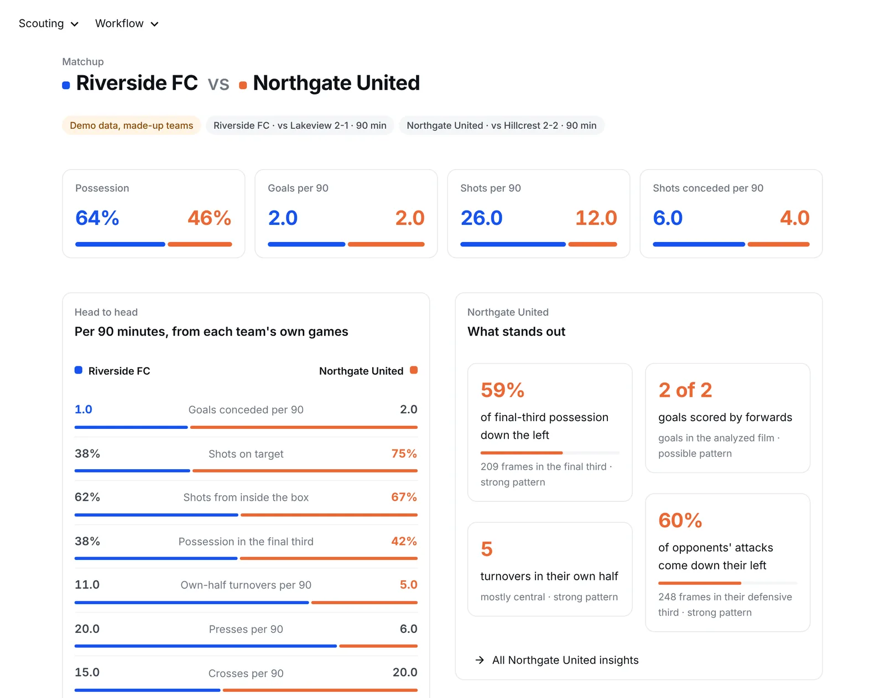
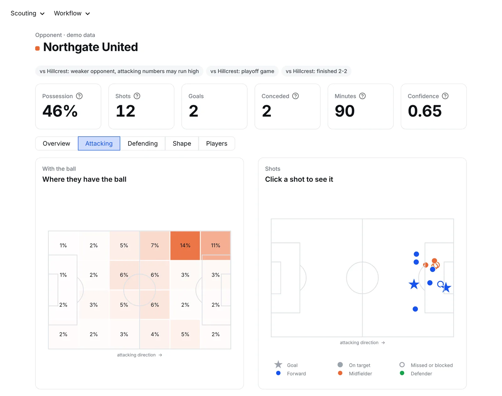
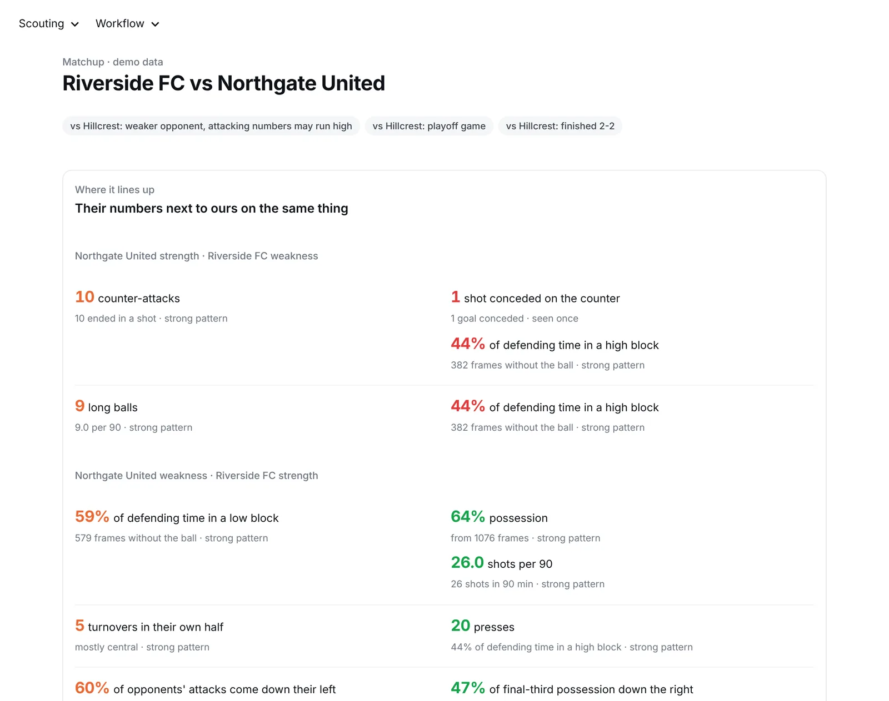

Soccer film scouting
Scout your next opponent from game film
Give it one game of yours and one of theirs. Claude reads the film every few seconds, and the app turns it into possession, heat maps, shot maps, shapes and the numbers that stand out, side by side. Every number links back to the moments behind it, so you can check it on film.
The demo is the real app running in your browser, with made-up teams. Nothing to install.

From the real-film test below, October 2026.
What you get
Both teams, read the same way
Your game and theirs go through the same steps, so the numbers line up. Then the app puts their strengths next to your weaknesses, and the other way around.

A page for each team
Heat maps with and without the ball, shot maps you can click, shapes, set pieces, turnovers and the jersey numbers seen most near the ball.

Where it lines up
Their strengths paired with your matching weaknesses and the reverse, their usual setups and set pieces, plus a printable report to share.
How it works
Fast because it splits the work
A full game is cut into pieces that are handled at the same time, without making the reading any less careful.
Pull frames
Several ffmpeg processes cut the video at once and keep the exact time of every frame. One frame every 4 seconds from a full game takes about 25 seconds.
Read the film
Frames go to Claude in groups of 16, eight requests at a time, with the same checklist for every frame. Small groups keep the reading careful and running them side by side keeps it fast. Each answer is saved as it arrives, so stopping never loses paid work.
Look closer
A second pass reads every second around goals and shots. Then the app adds it all up into the pages you see in the demo, and each insight keeps the moments it came from.
Real-film test
Two full games, start to finish
Two high school games from a public-access cable broadcast, about 85 minutes of play each, filmed from one wide camera at 1080p. Both ran in one go in 9 minutes 16 seconds, after about 25 seconds per game to pull the frames.
| Game 1 | Game 2 | Both | |
|---|---|---|---|
| Frames read, one every 4 seconds | 1,265 | 1,296 | 2,561 |
| Frames read around goals and shots | 109 | 91 | 200 |
| Requests to Claude | 94 | 94 | 188 |
| Cost with Claude Opus 5.5 | $6.83 | $7.51 | $14.35 |
| Goals in the game | 3 | 3 | 6 |
| Goals spotted in the first pass alone | 1 | 2 | 3 |
| Goals placed after the second pass, right team | 3, within 5 s | 3, within 5 s | 6 of 6 |
What worked
- Speed. Both games in under ten minutes, with every request finished and nothing to redo.
- Cost. About $7 a game, measured per request and shown in the app as it runs.
- Goals. With the goal times from the scoreboard, the second pass placed all six within five seconds and credited the right team.
Still hard on film like this
- Shapes. From one wide camera the players are small, and none of the 2,561 frames gave a readable formation.
- Possession. About half the frames were marked contested, and the average confidence was 0.43 out of 1.
- Goals on their own. One frame every 4 seconds caught half the goals. The second pass is there to fill that gap.
The next test is film from a tactical camera, where players are bigger in the frame. Test film from DoubleACS (Attleboro Access Cable System) under CC BY-NC-ND 3.0, used for private testing only. No frames, clips, team results or player details are shown here.
Use it
Run it on your own film
The app runs on your computer. You need Python 3.10 or newer and ffmpeg.
git clone https://github.com/Euryalus-Kay/Sportive-Scout.git
cd Sportive-Scout
python3 -m venv .venv
source .venv/bin/activate
pip install -r requirements.txt
streamlit run app.py- Add your Claude API key on the Analyze film page, or in a file called
.env. - Name the two teams and add one game for each, with kit colors and which way they attack.
- Press Analyze. Try the 5-minute quick test first. The app shows the cost before it starts.
- No API key? Claude Code can log the film by hand, as the README explains.